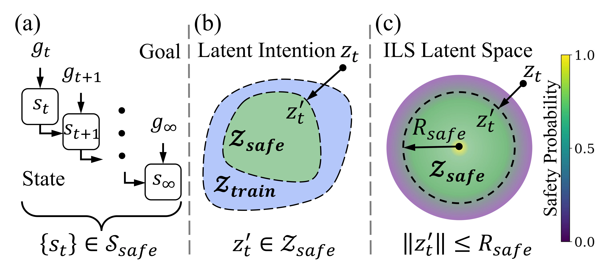
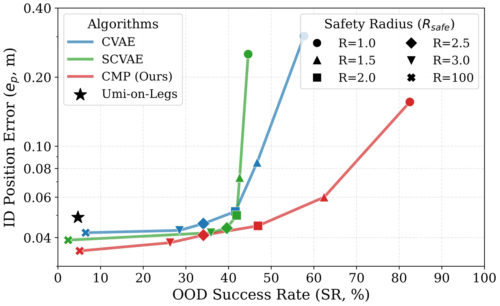
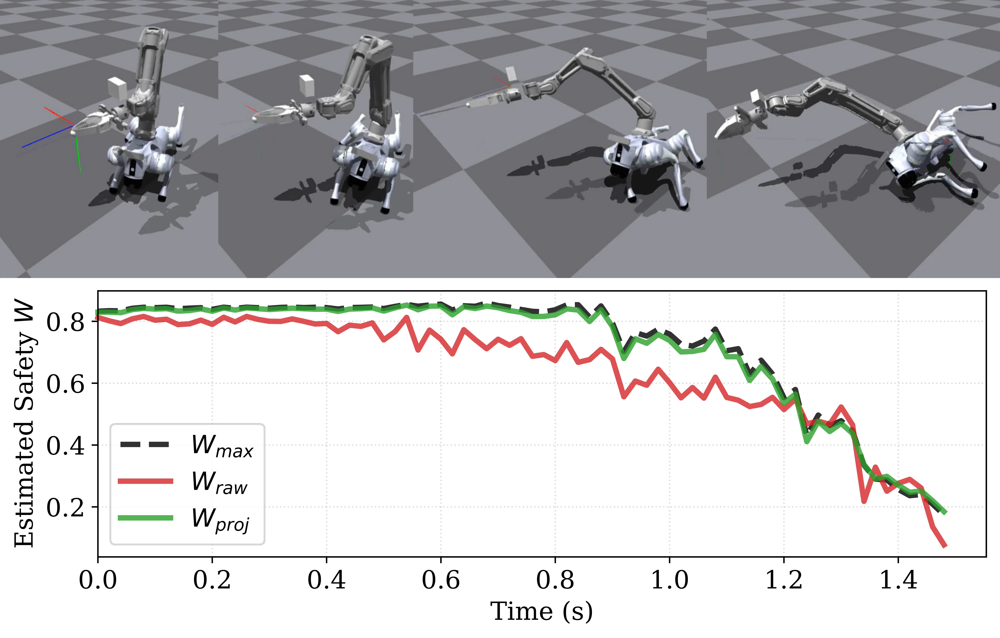
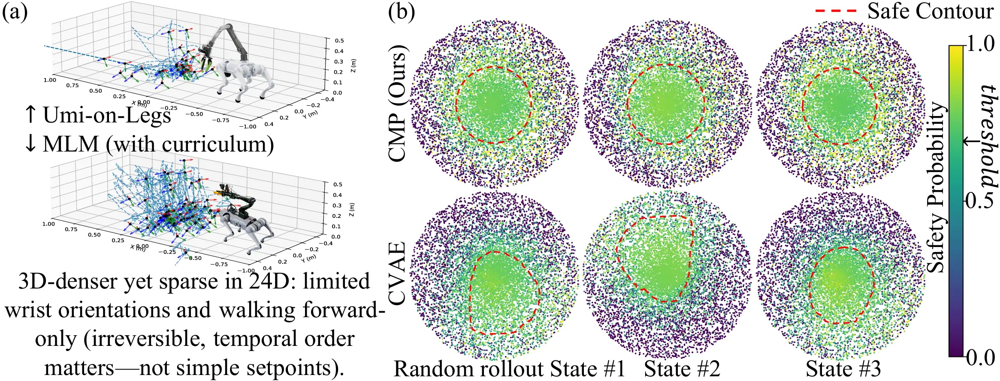

CMP: Robust Whole-Body Tracking for Loco-Manipulation via Competence Manifold Projection
Accepted to CoRL 2026
Questions or collaboration? Contact us zycheng1226@gmail.com
Abstract

While decoupled control schemes for legged mobile manipulators have shown robustness, learning holistic whole-body control policies for tracking global end-effector poses remains fragile against Out-of-Distribution (OOD) inputs induced by sensor noise or infeasible user commands. To improve robustness against these perturbations without sacrificing task performance and continuity, we propose Competence Manifold Projection (CMP).
Specifically, we utilize a Frame-Wise Safety Scheme that transforms the infinite-horizon safety constraint into a computationally efficient single-step manifold inclusion. To instantiate this competence manifold, we employ a Lower-Bounded Safety Estimator that distinguishes unmastered intentions from the training distribution. We then introduce an Isomorphic Latent Space (ILS) that aligns manifold geometry with safety probability, enabling efficient $\mathcal{O}(1)$ seamless defense against arbitrary OOD intents.
Experiments demonstrate that CMP achieves up to a 10-fold survival rate improvement in typical OOD scenarios where baselines suffer catastrophic failure, incurring under 10% tracking degradation. Notably, the system exhibits emergent "best-effort" generalization behaviors to progressively accomplish OOD goals by adhering to the competence boundaries.
Method Overview

Pipeline of Competence Manifold Projection. Target trajectories relative to the current Tool Center Point (TCP) frame are encoded into a raw latent intention $z_t^{raw}$ by an Intent Encoder $\phi$ for execution by the Low-level Policy $\pi$. A Safety Estimator $\omega$ is concurrently trained via Temporal Difference (TD) targets to assess safety. To streamline inference, the Isomorphic Latent Space (ILS) aligns safety contours to be spherical, with safety decreasing radially. This permits $\mathcal{O}(1)$ safety enforcement by simply truncating latent vectors that exceed the safety radius.
Core Formulation
The primary challenge of imposing safety on dynamic legged systems is the dependence on infinite-horizon future states. CMP simplifies this into a unified projection step.

(a) The original safety problem depends on future horizons. (b) We reduce it to a single-step latent inclusion check. (c) Utilizing ILS, we enforce an isomorphism between safety probability and geometric radius, creating a spherical boundary for easy $\mathcal{O}(1)$ projection.
Robustness to Out-of-Distribution Targets
A core advantage of CMP is its ability to handle infeasible, out-of-distribution commands gracefully without crashing, instead of failing catastrophically like standard models.

Visual comparison of hardware trials. The color bars denote the outcome: green for task success, blue for safe survival ("best-effort" execution despite lower accuracy), and red for catastrophic failure. While the baseline (UMI-on-Legs) succeeds in In-Distribution (ID) tasks, it suffers severe failures in OOD scenarios. In contrast, CMP safely handles arbitrary commands by generalizing to moderate OOD tasks and surviving extreme ones gracefully.
| Method | ID (5 tasks × 3 trials) | Moderate OOD (5 tasks × 3 trials) | Extreme OOD (5 tasks × 3 trials) | Latency (ms) ↓ | ||||||
|---|---|---|---|---|---|---|---|---|---|---|
| SR (%) ↑ | $e_p$ (cm) ↓ | $e_r$ (rad) ↓ | SR (%) ↑ | $e_p$ (cm) ↓ | $e_r$ (rad) ↓ | SR (%) ↑ | $e_p$ (cm) ↓ | $e_r$ (rad) ↓ | ||
| UMI-on-Legs | 80.0 | 4.9 ± 1.6 | 0.07 ± 0.02 | 0.0 | - | - | 0.0 | - | - | 2.97 ± 0.15 |
| Latent Shielding | 73.3 | 6.9 ± 4.3 | 0.09 ± 0.03 | 33.3 | 7.8 ± 6.6 | 0.16 ± 0.11 | 20.0 | - | - | 3.89 ± 0.49 |
| Neural CBF | 80.0 | 4.8 ± 1.9 | 0.09 ± 0.03 | 60.0 | 7.0 ± 4.3 | 0.17 ± 0.11 | 40.0 | 19.3 ± 11.9 | 0.24 ± 0.27 | 5.36 ± 0.54 |
| CMP (Ours) | 100.0 | 5.1 ± 1.8 | 0.09 ± 0.03 | 93.3 | 9.6 ± 7.2 | 0.24 ± 0.10 | 86.7 | 19.2 ± 11.1 | 0.87 ± 0.68 | 2.99 ± 0.14 |
Quantitative evaluation on physical hardware. We evaluate system performance across 15 target trajectories categorized by difficulty, with 3 trials for each task. CMP is the only method achieving a 100% Survival Rate (SR) across ID tasks, and maintains an 86.7% survival rate even under Extreme OOD commands where all baselines struggle heavily. It exhibits safe "best-effort" behaviors while maintaining an ultra-low inference latency of just ~3 ms.
In-depth Analysis
1. Defense Against Sensor-induced Divergence
Sensor noise (like VIO drift) can easily lead a conventional policy into a positive feedback loop of failure. CMP actively interrupts this cycle.

(Top) Without CMP, minor VIO error causes an unexpected input, leading to aggressive motion, which further exacerbates VIO error until the robot crashes. (Bottom) CMP truncates the unexpected inputs, effectively blocking the hazardous feedback loop and preserving stability.
2. Ablation & Trade-off
| Method | Frame-Wise | Estimator | ILS |
|---|---|---|---|
| UMI-on-Legs | × | × | × |
| CVAE | ✓ | × | × |
| SCVAE | ✓ | ✓ | × |
| CMP (Ours) | ✓ | ✓ | ✓ |

We sweep the safety radius $R_{safe}$ to examine the trade-off curve between ID position error in logarithmic axis and OOD-Geometry survival rate. CMP achieves a superior trade-off curve by correlating safety with the latent geometry through ILS.
3. Validation of the Safety Estimator

Top: Snapshots of the robot executing a raw OOD sideways push command without latent projection. Bottom: Time-series of Safety metric $W$ of the safest intention, raw input intention and the projected intention.
4. Isomorphic Latent Space (ILS)

Our ILS mechanism effectively reshapes intents into a statistical spherical boundary, allowing $\mathcal{O}(1)$ constraint enforcement via simple vector truncation. Let's see the safety boundaries effectively being shaped as a hypersphere.
BibTeX
@article{cheng2026cmp,
title={CMP: Robust Whole-Body Tracking for Loco-Manipulation via Competence Manifold Projection},
author={Cheng, Ziyang and Wei, Haoyu and Yin, Hang and Xu, Xiuwei and Yu, Bingyao and Zhou, Jie and Lu, Jiwen},
journal={arXiv preprint arXiv:2604.07457},
year={2026}
}